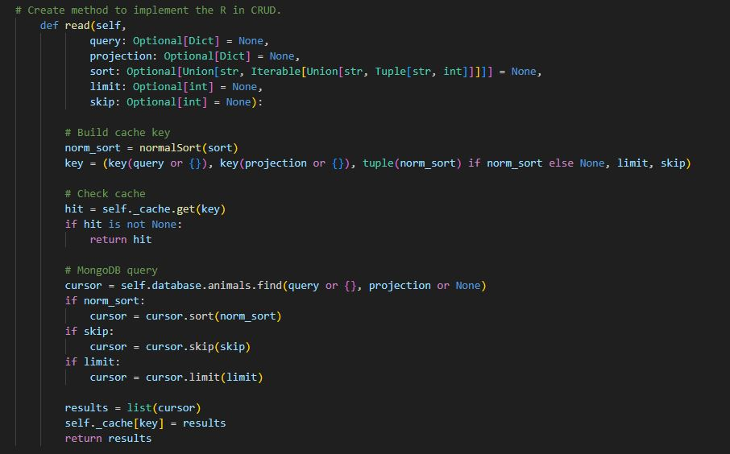
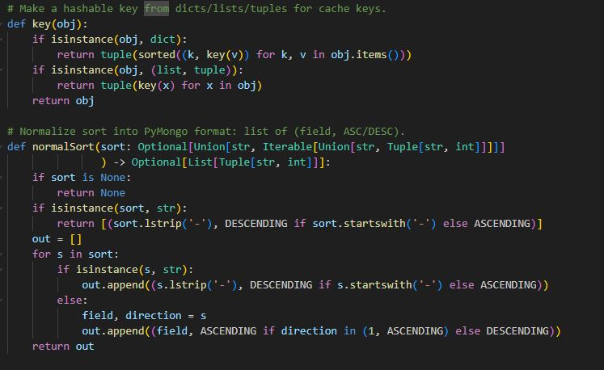

Algorithms and Data Structures
My second enhancement for my capstone project is from CS-340. The main focus for this is my animalShelter.py file from the Grazioso Salvare project. It was originally built as a CRUD module that connects to a MongoDB database for managing animal shelter data. I chose this artifact because it fits perfectly for enhancement of two which is algorithms and data structures. This shows how I can adjust a program more efficient and practical. For my enhancement I added caching and multi-key sorting to the read method. Caching helps speed up database reads by saving results from previous queries in a small dictionary, so repeated lookups don’t have to hit the database again. The multi-key sorting lets users sort by more than one field. Like sorting by animal_type and then by date_of_birth. The caching uses a dictionary for quick lookups, and the sorting uses lists and tuples to handle multiple sort keys. Both of these changes make the program faster and more flexible. It also improved my understanding of performance and how small design choices can have a big impact. While making these updates, I learned how to balance simplicity and functionality. I kept the cache lightweight so it’s easy to maintain and clears automatically after changes. The hardest part was normalizing the sort input to handle different formats without breaking anything.
Downloads
Screenshots

